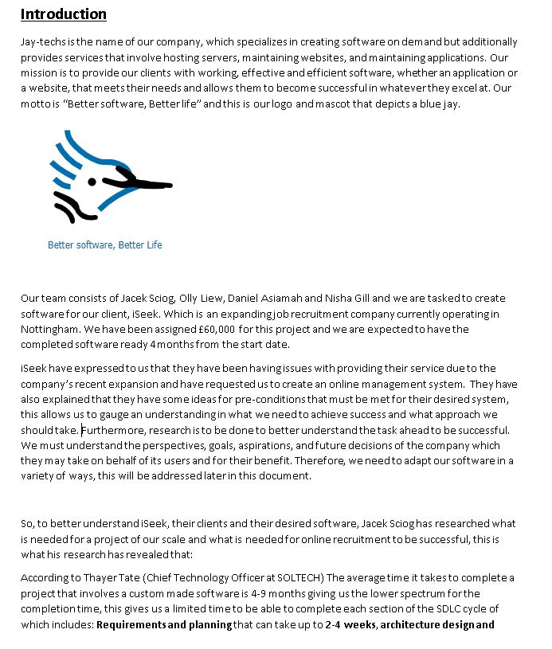
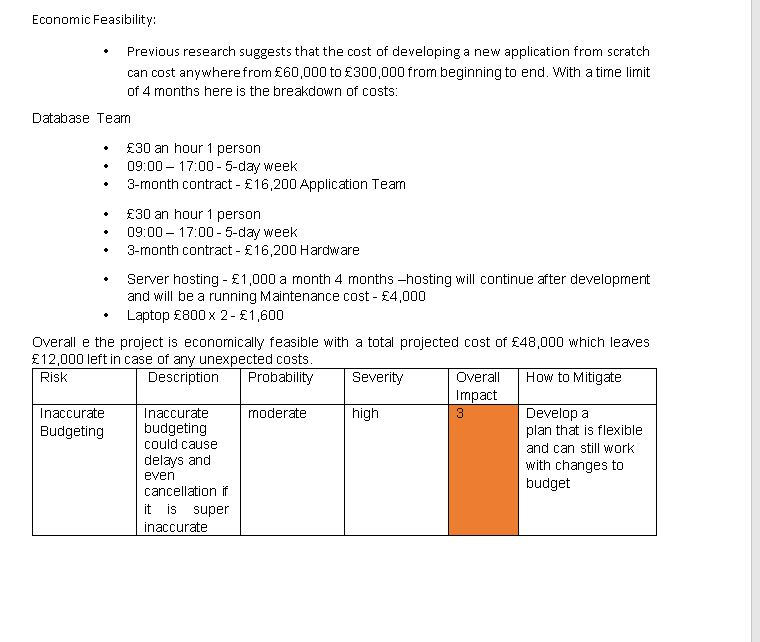
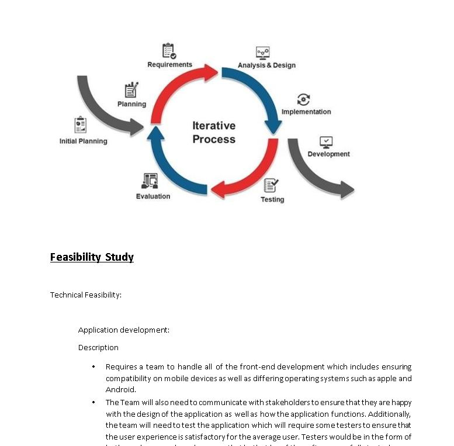
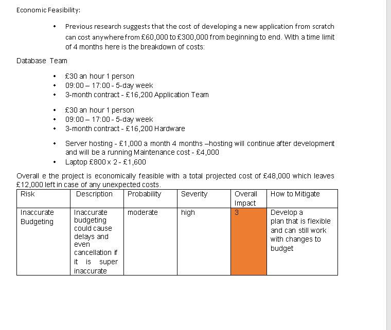
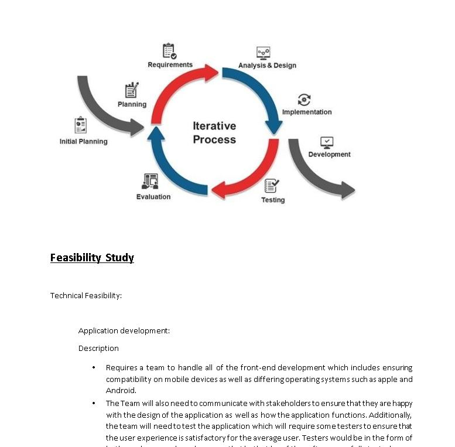

Projects
Project 1 - Creating a Maths quiz game
Daniel Asiamah's project website, he proudly presents his impressive achievement during his first year at university the creation of an engaging math quiz game using C++. This project showcases his passion for both mathematics and programming, as he combined these interests to develop an interactive and educational gaming experience.

The provided C++ code is a simple math quiz game that generates five random math questions and allows the user to answer them. After answering the questions, the game displays a leaderboard showing the players' scores based on the number of correct answers they provided.
Project 2 - System analysis iSeek Management
In this project, we followed the Systems Development Lifecycle (SDLC) to develop a systems proposal report. The project consisted of several stages, including planning, analysis, and design. We worked progressively week by week, ensuring that we didn't leave everything for the last minute.
 


